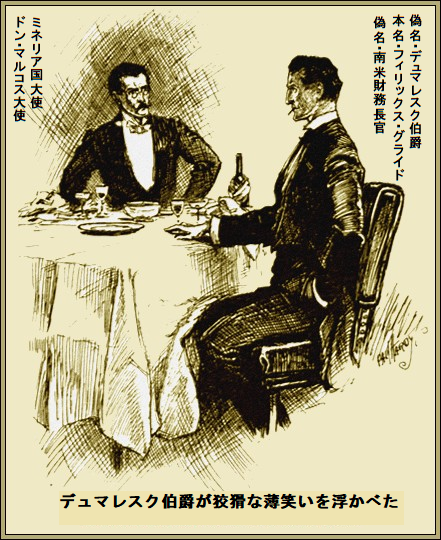
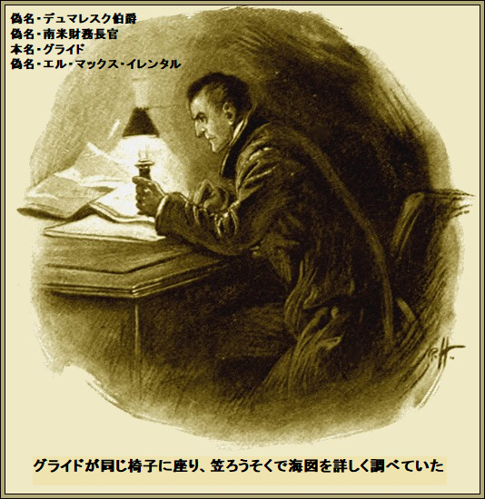
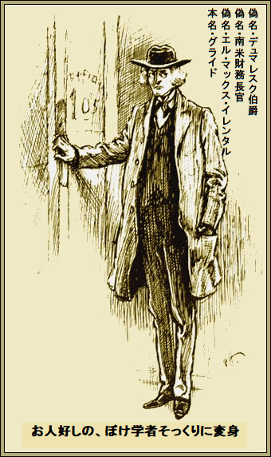
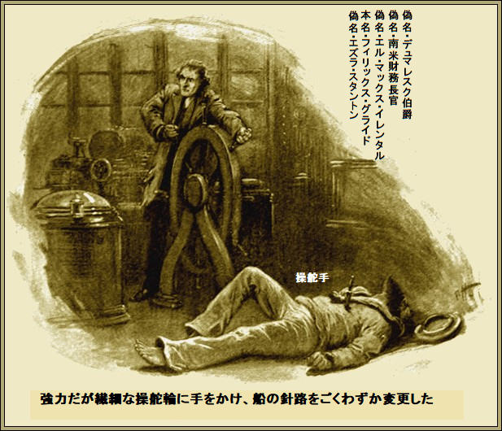

第一章
グライドが自分のクラブで、ミネリア国大使を
普段は
相手のミネリア国のドン・マルコス大使も細身の褐色肌、目が狡猾で、評判は
目下、二千万ポンドほどの英国資金が小国ミネリアに投じられていた。ミネリア国大使は極貧のオリバー・ツイストよろしく、もっと金を求めた。
どうしても五百万ポンド必要だったが、一千万ポンド要求したあげく、二百万ポンドせしめた。シティー側は大変歩が悪い。
よぼよぼあひることマルコス大使は自国の財政などそっちのけで決着をつけたがった。一層厄介だったのはミネリア国が隣国カタゴニアと
マルコス大使は進退極まった。
クルミを食べワインを飲みながら大使は
「いやあ、
とマルコス大使がつぶやいた。
デュマレスク伯爵が景気づけにほほ笑み、
「そんなに驚かなくてもいいでしょう。愛国者になる義理はありませんが、私の話を聞けば納得されるでしょう。国家の運命がかかっているとなれば、勇気リンリン、カタゴニア人は嫌いですから」
大使がギクリ。実際、伯爵は全てお見通しだ。
「喧嘩してるのをご存知で？」
と大使が探りを入れた。
伯爵が煙草を振って、
「二か月前から、いがみ合っているでしょう。現状では見通しは暗いですな」
「あと百万あれば、安心なのですが、欲しいのは……」
伯爵が割り込んで、
「戦艦でしょう。大戦艦が一隻あれば
「全くすごいお方だ。閣下のご推察通りです」
「調べましたからね。必要な船は完全装備で百万ポンドぐらいでしょう。軍艦の船員とか、士官は大した問題じゃありません。高給目当ての連中が当然集まります。必要な船に現金でいくら払えますか」
「英国のベルファストに二十万ポンドありますから残りは保証します。みんな眼の前で大喜びするでしょう」
とマルコス大使がほとんど泣かんばかりに答えた。
デュマレスク伯爵がテーブルを回り、声を落とし、ささやくように言った。
「もし現役の最新軍艦を一隻引き渡したら、私にその金額をくれますか」
デュマレスク伯爵は真顔だが、マルコス大使は笑った。
「ハハハ、閣下はからかって楽しんでおられる」
「私は生れてこの方、これ以上真剣になったことはない。
その一言で大使の眼が輝いた。
三段膨張エンジンは強力で、速射大砲そのものが軍団であり、装甲
「ああ、あんな軍艦さえあれば」
と大使がため息をついた。
デュマレスク伯爵の答えは簡単かつ魅力的だった。
「請求時に確実に二十万ポンド渡してください。そうすれば二か月以内に
大使があわてて赤ワインをもう一杯飲みほした。こんな大胆な提案は神経に
「まさか私をおちょくっていないでしょうね」
「道義心ということですかな、たぶん」
とデュマレスク伯爵があてこすった。
マルコス大使が即座に応じ、
「ふん、常識というものですよ。無理ですね。たとえ出来てもすぐ見つかります。見つからなければ二十万ポンドはあなたのものですけど」
「もう私のもの同然ですな。とても簡単ですよ、やり方が分かれば。情報の出所や計画は言えません。三カ月、いや二カ月以内に
「ですが、途中に猛獣がおります。船はどこから調達なさるんで？」
「こんな記事を新聞紙上で宣伝しなさい。アメリカの企業が貴国に巡洋艦を建造したと。すぐやりなさい。有名企業を明記しなさい。単なる宣伝の為と分かれば、先方も否定しないでしょう」
マルコス大使が納得して首を縦に振り、
「全くすごいお方だ。ええ、そのように。かえってその件では私に害が及びません。でも、猛獣がもう一匹、最強なのがいます。英国ライオンです。どうですか」

デュマレスク伯爵が狡猾な薄笑いを浮かべて、
「船が不明になって大騒動が起こるとでも。君、どんなことがあっても騒動にならないよ。何カ月も計画を練ったから、完璧だ。方法は当分秘密だがね。約束するよ、いずれにしろ、騒動や喧嘩にはならない」
「そのあとは？」
「あとはだな、今日から二か月後にドラガルド湾へ技師と職人を連れて来なさい。それまでに船を入港させる。船に上がって、二十万ポンドを払い、小舟を仕立てて、サン・マザ港まで私を運んでください。いいですかな」
マルコス大使が痩せた褐色の手をさっと伸ばし、
「手を打ちましょう。神のご加護でございます」
デュマレスク伯爵ことグライドが微笑んで、ぼそっと言った。
「天は自ら助くる者を助く」
第二章
グライドの奇抜な計画は決して一時の思いつきじゃない。そればかりか初耳ともいえない。帆船を盗むというのは海洋作家がよく使う手だ。しかし十九世紀末に戦艦を強奪するのはまた全く別な次元だ。
マーク・トウェインの『盗まれた白象』のように当然大騒動になる。ダイヤと違い戦艦は上着のポケットに隠せないからだ。
通常の環境なら、東女帝丸は確実に
でも、犯罪を芸術並に終わらせたいので、そのまま捨て置けない。当然例外はあってしかるべき。だから見かけ上、全く犯罪と分らないようにしたい。
そうすれば騒動などあり得ない。一見、ばかげているようだが、グライドは方法を見つけていた。
言うまでもないが、そんな計画には時間とカネを相当食う。グライドなら英国作家ウォルポールの作品に
確実に海軍のちょっとした秘密を暴いた。その一例、
これまた公然の秘密だったのは、東女帝丸の処女任務が二年間この海域だろうということ。それには二つの目的があった。スペインに馬鹿なことをするなと警告することと、海図を修正することだ。
＊
グライドは慎重に行動した。海軍のやり方なら熟知している。つまり海軍大臣と東女帝丸艦長が重要案件で会談する。
時間はグライドがマルコス大使と会った晩の遅い時刻、海軍大臣の家族が寝入ったあとだ。
グライドはこの事実を
書斎から煙草のかぐわしい香りが漂った。酔いそうになったが、ぐっとこらえた。楽しみを捨ててこそ、いい仕事ができる。
会談を盗み聞き、
半開きの扉から覗くと、アララト海軍大臣とジェームズ・クリントン艦長がテーブルに広げた大きな海図を熱心に見入っている。
「ちょっとまずいぞ」
と海軍大臣。
「そうですね。欲しいのは
とクリントン艦長が笑うと、大臣も笑った。
成金で爵位にありついたお偉い紡績社長、その人こそ賢明な英国政府が選んだ海軍大臣だった。当のアララト大臣は自宅への侵入者など全く気付かず、無頓着だ。
「危ない場所じゃないか、暗礁は」
と大臣。
クリントン艦長も同意した。でもテーブルに広げた海図は信頼できるもので、危険な岩礁や浅瀬が全て記されていた。
これは最近、カタゴニアの科学者から購入したもので、艦長の既成概念を改めようとするためだった。
「大臣、唯一の危険箇所はヘン・チキン暗礁です。潮流がとても速いです。この海図があっても、見逃して、大事になりかねません。私としては海図を忠実に追って、ついでに水深を測り直します。二年で完了させます」
「科学調査隊を連れていくのか」
「はい。四人です。イレンタル先生はとても優秀なドイツ人で、友人も熱心と聞いています。やや変則的ですが、間違いなくいい助手になります」
聞いたグライドがニヤリ。あとで有名なドイツ学者を演じ、科学調査で東女帝丸の船客になるつもりだ。残りは使い走りの共犯者、暇になったら切り捨てる。
アララト大臣があくびをして、ちらと時計を見た。もう夜は遅く、今夜は忙しかった。クリントン艦長が立ち上がって、おいとまを告げた。
「これ以上お邪魔しません」
「ああ、疲れたよ。この海図は明日まで預かっておく。キャンスフォードに見せる手はずだ。艦長は海図を回収してから土曜日にポーツマスを出港しろ。おやすみ」
クリントン艦長は新しい煙草をくわえ、退出した。大臣は家に鍵をかけ、あくびしながら寝室へ行き、まず東中海図を書斎テーブルの引き出しに入れた。
半時間後、グライドが同じ椅子に座り、笠ろうそくで海図を詳しく調べていた。ポケットから取り出した紙切れと詳細に見比べている。

次にコンパスと
次に
乾くと、海図を引き出しに戻した。さしあたりグライドの仕事は完了だ。数分後、
「しまった、鍵をかけずに出た。ちょっと不手際だったな。だが召使いは気付かないだろう。ご主人様の帰宅が遅くて、鍵をかけ忘れたと思うだろう。のんびり煙草が吸えるぜ」
グライドは心が軽くなって自分の宿屋へ通りをぶらついた。計画が全て完了して成功は確実だ。
海図に加えた変更はわりと局所的だが、一センチが海上の一キロに匹敵する。つかの間の仕事は何カ月にも及ぶ不断の苦労と研究の
もし天才が労苦を
＊
二日後、グライドはポーツマスに向け出発し、
太った体型、ふさふさの金髪、
第三章
英国海軍は今年一番高額な予算を追加し、六週間の海上任務を行っていた。東女帝丸は同予算をとうに超過していたが、クリントン艦長は最強の戦艦を指揮していることを知っているから悠然としていた。
とある十月の闇夜、うるわしい夏の海は海風が冷たくさわやかで、島々がピリッと刺すような香りを漂わせ、ミネリア国を囲むように横たわり、海岸線の端っこには厳然とサン・マザ港があった。
クリントン艦長は幕僚と一緒に士官甲板で葉巻を吸っていた。そのなかに
「やつら、なんで戦わないんだ。あれだけ小型砲艦がいれば、宣戦布告できるぞ」
とクリントン艦長。
「ミネリア人はアメリカから来る新造船を待っているのであります。船が来たら、騒ぎが見られます。私も楽しみであります。探索と
「蒸気小型船を呼んで、よければ上陸したまえ」
とクリントン艦長。
イレンタル先生が感謝した。ちょうどお願いしようかと思っていたところです、と言った。
＊
一時間後、サン・マザ港の波止場をよろけながら歩く酔っ払いは足元がおぼつかないが、しょせん持ちネタの演技だ。ごく自然にふらりと喫茶店にはいり、さも偶然に居合わせたかのような人物はマルコス大使じゃないか。
「こんばんは」
とマルコス大使。
「やあ。私と分からなかったでしょう。ここへ行きなさいと、ことづてしました。船は見ましたか」
とグライド。
「ええ、もちろん。我々のものだったらなあ。小型砲艦め。まあ、閣下が成功なさったら、さっさと片付けてやる」
「私はいつも成功する。今から三日後に東女帝丸はドラガルド湾に入れる。人員は準備できましたか」
「道具を準備して待機しています」
「よろしい。職人に任せて、東女帝丸と分からないほどに偽装させなさい。思ったほど難しくありません。もう一つ最重要な指示があります。捕獲した戦艦がドラガルド湾に着くころ、英国軍艦の乗務員がサン・マザ港へ小舟で到着するはずです。直ちに追っ払ってください。国が混乱しているとかなんとか言って。なぜなら、もしもそのとき捕獲した戦艦が入港したら……」
グライドが意味深に止めた。
マルコス大使がうなずいて、
「ごもっとも。そのようにします。ほかには？」
「些細なこと、はした金ですよ。東女帝丸に乗り込み、現金をお渡しください。そのとき共犯の四人も乗っています。手配の小舟で私がサン・マザ港へ行く間、奴らは船に留めて、二、三日もてなしてください。その間、奴らが何かしでかしたら、容赦なく殺してかまいません」
「死人に口なしですね」
とマルコス大使がうそぶいた。
「そういうことです。それに分け前も要りません」
二人は目くばせし、グライドが椅子から立ち上がった。さも自然に再び足元をふらつかせ、お人好しの、ぼけ学者そっくりに変身した。
＊
サン・マザ港はいいところでありました、とイレンタル先生がクリントン艦長に告げたのは少しあとだった。

「申し訳ないがまだ見てないんだ」
とクリントン艦長。
「たぶんまだでありましょう。口で言えないほどであります。ふーっ、さてと、船室へ戻って測深を清書いたします。部下はどこへ行ったやら」
その頃、共犯どもは船室で親分を待っていた。グライドが扉を閉めると、食い入るように見つめて、一人が尋ねた。
「なにかニュースは？」
「ああ、ある。やっと肝心な潮流の情報を全部聞いた。現地の物知りがすべて教えた。木曜日の夜十時にヘン・チキン暗礁の端に行くぞ。俺が艦長に掛け合ってうまくやる。月がないから、数時間は真っ暗闇だ。当日の夜十一時には船底の持ち場にいろ。合図なんか必要ない。感じるからだ。すべてうまく行ったら、数時間後、各人に一万ポンドずつやるぞ」
共犯どもがにやけた。見通しはとても楽しいものだった。
グライドが続けた。
「さあ、すべては貴様らにかかっておる。船は海図に従って皆が考える通り、暗礁の南方に一度かそこらで進んでいる。お前らがよく知ってるようにまさに乗りあげ舵だ。最初の衝撃で任務を実行しろ。バラストタンクを調整して、浸水させて、大混乱させろ。その操作で船首が軽くなり浮いていられる」
「ええ、でも浮いてますか」
と一人が尋ねた。
「当然だ。乗りあげる
グライドは計画に絶対の自信と、実力を誇示して手下を解散させ、休んだ。
翌朝ミネリア国の海岸が見え、
＊
翌日はゆるりと終わり、やっと夜のとばりが黒雲のように降りて何も見えなくなった。十時頃までグライドは船室で忙しく過ごし、それから甲板に上がり、気付かれないようにした。
もう、よろよろしていないし、しなやかで軽快な足取りは猫のようだ。場所を選び、船の明かりを避け、暗影に身を伏せて進んだ。
やがて目的の
べたなぎを行く東女帝丸の位置を正確に知ったとき、不安が無いどころの騒ぎじゃない。少し南へ寄れている。これじゃ離れ過ぎて、暗礁にぶち当たらん。
奥歯をぐっと噛み、影のように操舵室に忍び込んだ。ポケットから何か長くて光るものが……。空中高くキラリ輝くや、柔らかい物体をブスリ。
グライドが刃物で心臓を的確に一突きすると、操舵手は床にドタンと倒れ、ひといき長くうめき、静かになった。

「最悪だぜ、大馬鹿どもの始末は。他人に任せるといつも計画が狂う。こんな危ないことは全く必要なかったのに」
冷静だったが、耳奥で血液がドクドク鳴っているのが分かった。五分間誰も来なければ、うまくいく。だが、足音が近づいてきた。一刻を争う瞬間だ。もう一人殺さなければならないか。絶対入れるもんか……
操舵室の扉に手がかかった。グライドが飛びかかろうと構えた時、東女帝丸がぶるっと震え、端から端までぐぉーんと泣くさまは巨獣が断末魔に苦しむかのよう。続いて、どすーん、ぎーぎーと激しくもだえ、静かになった。
やったあ、と叫びたかったが、こらえた。ともかく、叫びが聞こえたかどうかは知らないが、既に、甲板に足音がどたどた。
恐怖をさらにあおるかのように下から大音響がして、海水が何トンもゴウゴウ流れ込み、船は沈没確実のようだ。たちまち船尾から沈み始めた。
厳しい命令があった。
「ボートを降ろせ。落ち着け、時間は充分ある、あわてるな」
グライドは操舵室に隠れてこっそり見ていた。船員たちは行進するかのように、きびきび整然と動いた。驚くべき短時間で最後のボートを降ろし、乗員を移した。
遂にグライドと手下は東女帝丸を手に入れた。ちょっと間をおいてから、我がもの顔で動き始め、一個ずつ明かりを消して、船を真っ暗にした。機関室へ降りると、汗と油まみれの手下がいた。
「よくやった。あの轟音と
「でも本当に浮きますか」
と手下の一人が
「絶対確実だ。もう船首が揺れてないか。誰か一人、操舵室へ上がれ、ずた袋と
潮がだんだん満ちてきて、東女帝丸は浮いた。ついに生き物のようによみがえった。深夜二時になってから、グライドが次のように命令した。眼は勝利に酔っていた。
「機関、始動。明日昼までにドラガルド湾に着くように」
＊
三日後の同時刻、つまり東女帝丸の沈没情報が英国に届いたころ、行方不明者一人を除く乗組員全員が、ミネリア国を離れつつあった。
特別仕立ての蒸気船は同国政府の好意で借り上げたものだった。同蒸気船には余分な乗客が一人乗っており、高慢ちきで詮索好きなアメリカ人で、みるからに胡散臭いので、皆が村八分にした。だが当のアメリカ人は超然としていた。
数週間後、桟橋から馬車で外出しながらつぶやいた。
「いい変装だったな。奴らどう言うかなあ、特にクリントン艦長は。不作法なエズラ・スタントンとマックス・イレンタル先生が同一人物だと知ったら。いつかトリックを見破れるかな。どうあろうと累は及ばぬ。死人に口なしだ」
了